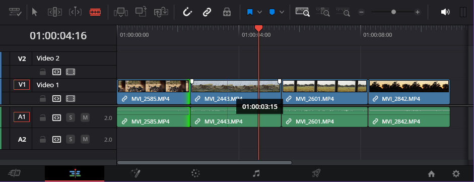

Work with Audio and Video Layers
Overview
Layers in DaVinci Resolve are stacked video or audio tracks in the timeline that control how video and audio elements appear and play. Video and audio clips can be placed on any layer. Video layers determine what is visible on screen, while audio layers control how sound is mixed and heard.

How layers work in DaVinci Resolve
- For stacked video layers, only the top layer will be visible.
- For stacked audio layers, all layers will be heard simultaneously.
- Adjustments applied to an entire layer, like audio layer gain or video layer opacity, will affect all clips on those layer.
Layers are often used to:
- Add background music below clip audio
- Add sound effects to a video
- Place titles over video (See: Add Text to the Timeline)
- Add B-roll footage over a longer clip
Tips
You can mute an audio layer to remove all audio from clips placed on that layer.